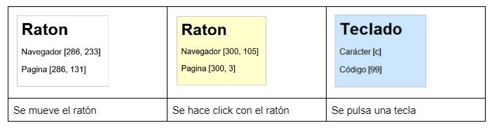

U.T.5 .- EVENTOS, FORMULARIOS Y EXPRESIONES REGULARES EN JAVASCRIPT
PRÁCTICA 1. EVENTOS EN JAVASCRIPT
Objetivo: Familiarizarse con la gestión de eventos en Javascript.
Desarrollo: Se realizarán las tareas enunciadas a continuación, utilizando los materiales aportados por la
profesora y consultas de bibliografía e Internet. Elaborando los ficheros necesarios, documentando
debidamente con los comentarios oportunos.
Ejercicio 01
Realiza una página web que muestre un número dentro de un div y responda a los siguientes eventos de la
siguiente manera:
Cuando haga doble click, calculará el triple del número
Cuando pase el ratón por encima cambiará de color (fondo y fuente) y cuando salga volverá a su color
original.
Abrir ejercicio 01
Ejercicio 02
A partir de la página web proporcionada, completar el código JavaScript para que:
- Cuando se pinche sobre el primer enlace, se oculte su sección relacionada. Observa que los id de
enlaces y contenido tienen un formato similar y que el id del enlace corresponde con el id del
contenido. ejemplo: enlace _1corresponde con contenido_1
- Cuando se vuelva a pinchar sobre el mismo enlace, se muestre otra vez esa sección de contenidos
(pista: propiedad style.display o style.visibility )
- Completar el resto de enlaces de la página para que su comportamiento sea idéntico al del primer
enlace
- Cuando una sección se oculte, debe cambiar el mensaje del enlace asociado (pista: propiedad
innerHTML)
Abrir ejercicio 02
Ejercicio 03
Realiza una página en Javascript que tenga una caja, queremos que en esa caja...
-
Al mover el ratón en cualquier punto de la ventana del navegador, se muestre la posición del puntero
respecto del navegador y respecto de la página Ayuda: e.screen,
e.page,
e.client
Al pulsar cualquier tecla, el mensaje mostrado debe cambiar para indicar el nuevo evento y su
información asociada. (ayuda)
- Cuando se pulsa un botón del ratón, el color de fondo del cuadro de mensaje debe ser amarillo
(#FFFFCC) y cuando se pulsa una tecla, el color de fondo debe ser azul (#CCE6FF). Al volver a mover
el ratón, el color de fondo vuelve a ser blanco. El resultado será similar a:

Abrir ejercicio 03